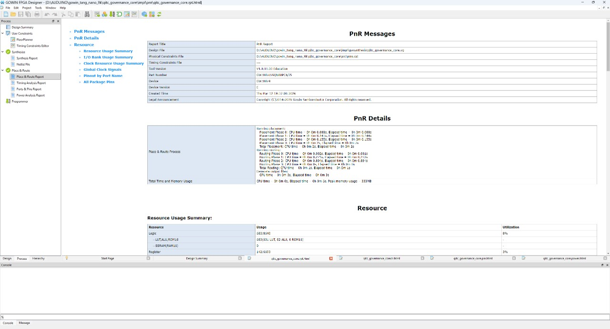
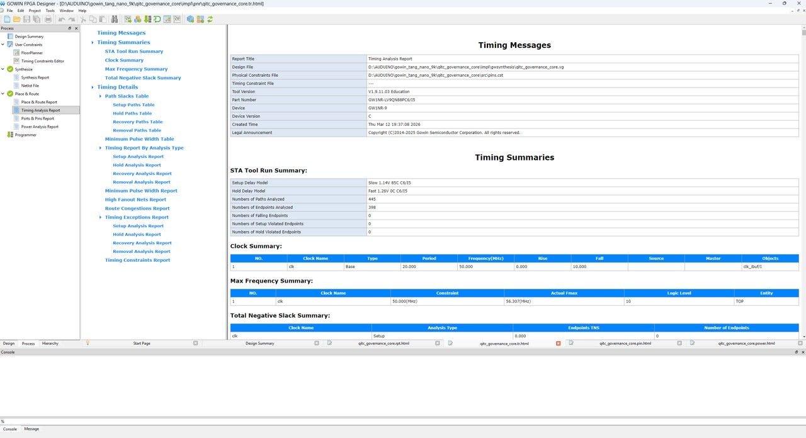
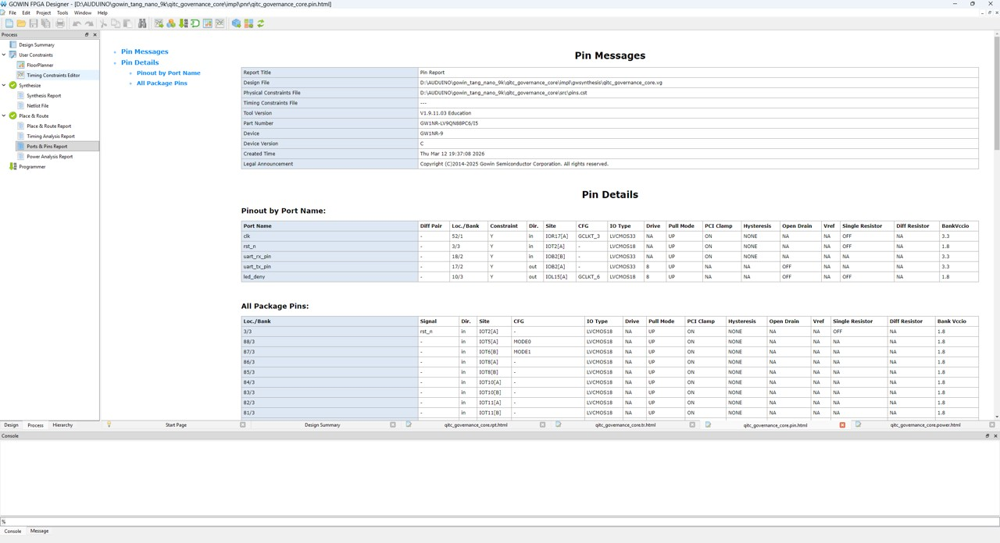
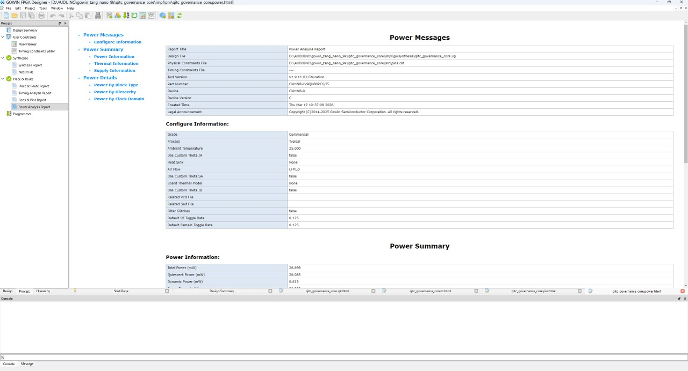

1. Project Overview
Edge AI systems increasingly require deterministic and legally admissible control mechanisms. This project develops a hardware-enforced adjudication engine implemented as Silicon IP. It translates probabilistic AI outputs into legally defensible, verifiable physical execution.
- Objective: 100% physical compliance and evidence generation without NPU overhead.
- Target: High-stakes environments (Automotive SDV, Industrial Automation).
2. System Architecture
AI Inference Engine (MPU)
↓ (One-way Hardware Gate)
Hardware Adjudication IP
├─ Decision → Actuator Control
└─ Evidence → Immutable Ledger
3. Conceptual Functional Blocks
[+] Deterministic Policy FSM Engine
[+] Physical Gate Controller
[+] Hardware-Anchored Evidence Generator
4. Hardware Data Flow
- Input (From AI MPU): Unidirectional data diode receiving non-deterministic payloads and confidence arrays.
- Control Output (To Actuator): Strict deterministic execution states (ALLOW, DENY, PENDING).
- Evidence Output: Cryptographically bound hash linking the decision directly to the physical hardware state.
5. FPGA Implementation Strategy & Physical Validation
We deliberately synthesized our RTL on a highly constrained, entry-level FPGA (Gowin Tang Nano 9K). The following silicon-proven EDA reports objectively demonstrate our exceptionally lightweight logic footprint and absolute constant-time deterministic performance.
Click images to enlarge EDA reports.

Synthesis Resource

Post-PnR Resource

Power Analysis

Timing Analysis (Delay/Fmax)
6. Resource Utilization (Hardware Validated)
| Resource Metric | Post-PnR Data | Status |
|---|---|---|
| Logic Elements (LUTs) | 601 (8%) | Ultra-low footprint |
| Registers / Flip-Flops | 142 (3%) | Optimized |
7. Performance & Latency Trajectory
O(1) Physical Latency
8. Adjudication Pipeline & Evidence Chain
Unlike standard software filters, our IP produces legally admissible evidence through a constant-time hardware pipeline.
- Constant-Time Execution: The entire evaluation pipeline executes with a maximum data path delay of 17.360 ns, ensuring absolute determinism regardless of input complexity.
- Hardware-Anchored Evidence: Generates a non-repudiable cryptographic hash binding the AI payload, the applied safety rule, and the exact hardware state timestamp.
- Legal Admissibility: Because the adjudication hash is generated at the physical silicon level prior to actuator release, it forms an immutable audit trail entirely immune to OS crashes, root-level tampering, or Prompt Injections.
9. Feasibility for Snapdragon-class SoC Integration
Based on the verified FPGA footprint (601 LUTs / 142 DFFs) and strict constant-time logic, migrating this IP to an advanced technology node (e.g., 5nm/4nm Automotive SoC) incurs negligible Area and Power overhead.
- Estimated ASIC Area: ~ 0.01 mm² (Estimated)
- NPU Impact: Zero cycle stealing from core tensor operations.
- Execution: Architecturally aligned with ISO 26262 deterministic control requirements.
SoC Integration Path
Core NPU / CPU (Non-Deterministic)
│
▼ AXI-lite / AMBA APB Peripheral Bus
Policy Engine (Our IP)
▼ GPIO / Secure Peripheral Bus
Actuator Control Interface
10. Competitive Positioning & Market Moat
Why traditional isolation architectures are insufficient for Agentic AI execution.
| Architecture | Isolation Level | NPU Overhead | Immunity to OS Crash | Our IP (Hardware Gate) |
|---|---|---|---|---|
| Software Guardrails | Application Layer | High (Shares compute) | None |
|
| ARM TrustZone | Secure OS / Logical | Medium (Context switch) | Partial | |
| Safety Island (MCU) | Physical MCU | Zero | High |
* Unlike a programmable Safety Island MCU, our static FSM prevents runtime code injection entirely.
11. Verification Strategy
Rigorous validation pipeline ensuring IP reliability before tape-out.
RTL Simulation
100% FSM state coverage and branch coverage achieved via testbenches simulating non-deterministic payload anomalies.
Formal Verification
Property checking confirms deterministic constant-time latency and zero-deadlock states under all boundary conditions.
FPGA Prototyping
Physical validation on Gowin Tang Nano 9K, confirming low power (26.698 mW) and clock frequency thresholds (56.307 MHz).